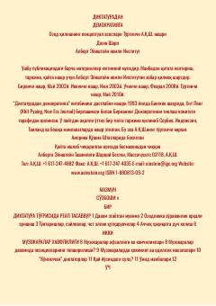

DDZararkunanda diktatura rejimlarini tinch yo'l bilan bartaraf etish va demokratiyani barqarorlashtirish qo'llanmasi.
Ushbu kitob avtoritar va totalitar tuzumlarga qarshi tinch kurash olib borish, siyosiy hokimiyatni zaiflashtirish hamda demokratik jamiyat poydevorini yaratish usullarini o'rganadi. Muallif zo'ravonliksiz qarshilik ko'rsatish strategiyalarini tahlil qilib, ozodlikka erishishning amaliy yo'llarini ko'rsatib beradi.